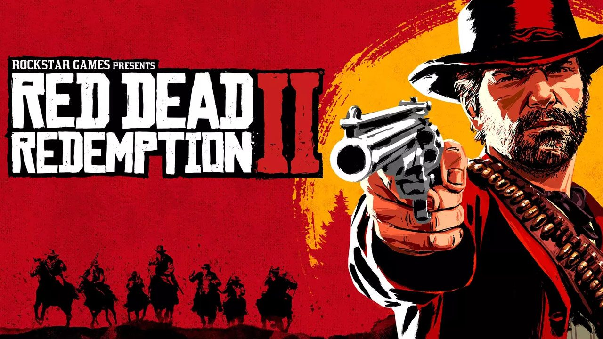
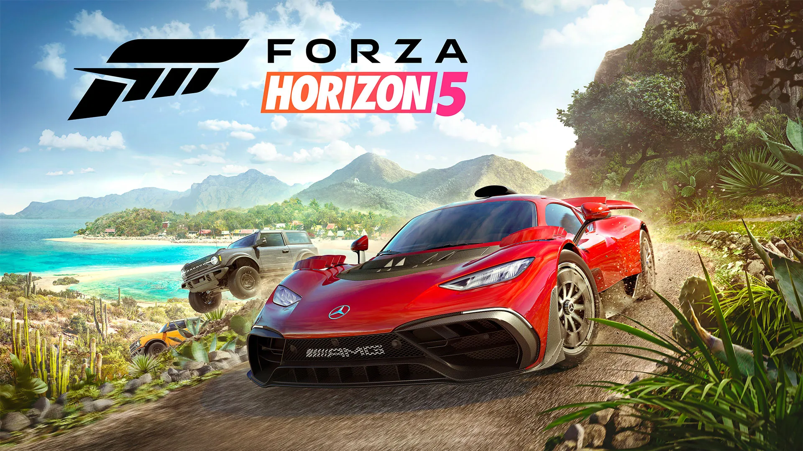

Desde de criança sempre fui apaixonado por jogos, é um dos meus hobbies favoritos. Ao jogar, me transporto para outro universo onde posso esquecer um pouco das dificuldades do dia a dia e me distrair um pouco. Segue abaixo alguns dos meus jogos favoritos.

Grand Theft Auto V
Quando um tratante inexperiente, um ladrão de bancos aposentado e um psicopata aterrorizante se envolvem com algumas das figuras mais assustadoras e problemáticas do submundo do crime, do governo dos EUA e da indústria do entretenimento, eles precisam realizar uma série de golpes ousados para sobreviver em uma cidade implacável onde não podem confiar em ninguém, nem mesmo um no outro.
Red Dead Redemption 2
Estados Unidos, 1899. O fim da era do velho oeste começou. Depois de tudo dar errado durante um roubo em uma cidade do oeste chamada Blackwater, Arthur Morgan e a gangue Van der Linde são forçados a fugir. Com agentes federais e os melhores caçadores de recompensas no seu encalço, a gangue precisa roubar, assaltar e lutar para sobreviver no impiedoso coração dos Estados Unidos. Conforme divisões internas profundas ameaçam despedaçar a gangue, Arthur deve fazer uma escolha entre os seus próprios ideais e a lealdade à gangue que o criou.
Forza Horizon
Forza é uma série de videogames de corrida para consoles Xbox e Microsoft Windows publicados pela Xbox Game Studios. A franquia está atualmente dividida em duas séries, a série original Forza Motorsport desenvolvida pela Turn 10 Studios e a série Forza Horizon, de foco em mundo aberto, desenvolvida principalmente pela Playground Games.
